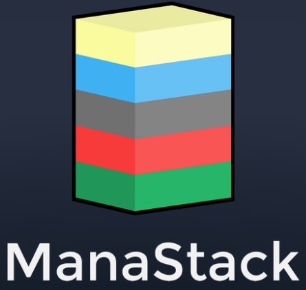
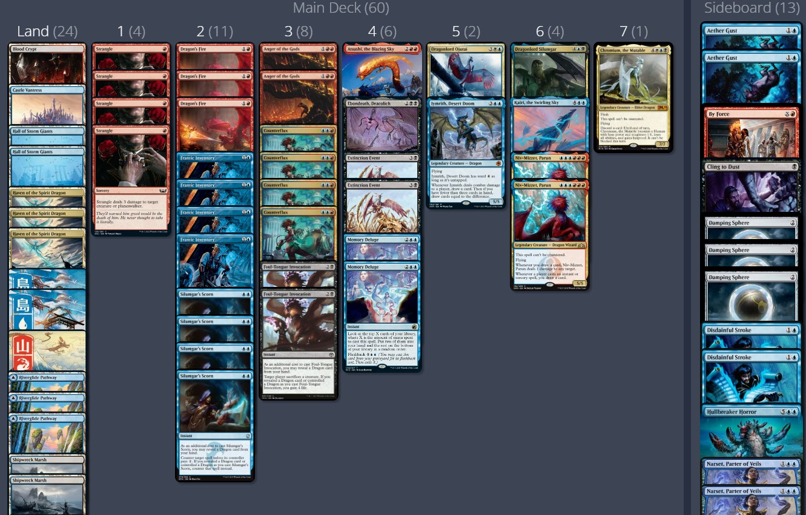
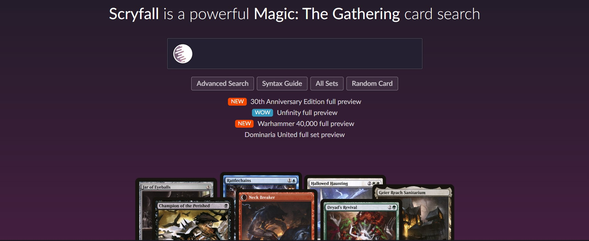

ManaStack - MTG Deck Organiser
 ManaStack is a Magic: The Gathering deck organiser that I made since I could not find anything like it online so, I decided to make my own. It comes with the Scryfall API to find any card you like and each new set is updated into the client within 3 days of release. Build your next deck!
Scryfall - MTG Card Searcher
This application allows the user to search for any card ever created in the history of MTG. There is also an 'Advanced Search' setting which allos the user to be specific on what type, cost and format legal cards they might be searching for. Find that right card for your deck!
Mana Calculator - Playing on curve

Calculating the correct mana base for decks can be tough, which is why I created 'MTG on Curve'. After entering your deck, the application will Calculate for you the percentage chance you will be playing your spells on curve. Upgrade your manabase!